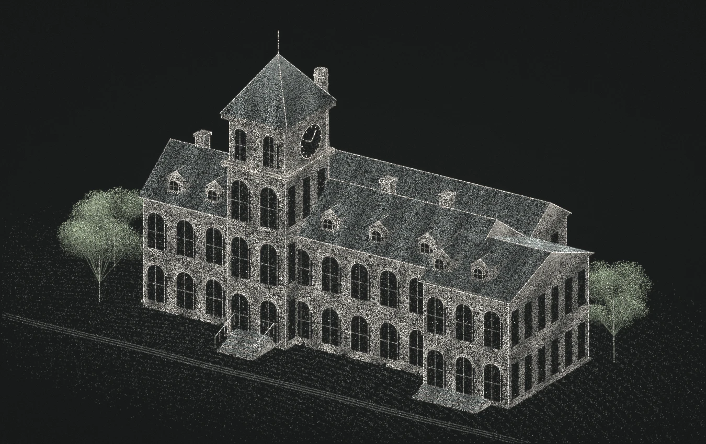

门框在原图的什么位置
从走廊两端拍同一扇门，两张照片里的门框位置不同。运动恢复结构（SfM）利用跨图像匹配估计相机位姿和稀疏三维点。原版 3DGS 用这些点初始化高斯，训练时按每张照片对应的相机参数重现拍摄视角。
如果位姿来自视觉 SLAM，训练前就能检查它。取同一个门框角点，按各帧相机参数投回原图，看投影是否落在相应的角上。多数帧都投到错误一侧时，核对世界到相机的变换方向。偏差随运动速度增大时，再查图像和位姿的时间配对。
一个高斯在屏幕上占多大
高斯有中心、朝向、三个轴上的尺度和不透明度。三个尺度可以不同，所以细长的高斯可以顺着门框展开。投影到屏幕后，它覆盖一片椭圆形区域。相机换了位置，椭圆的大小和朝向也会变。球谐系数则描述从不同方向看过去时的颜色。
渲染器把屏幕分块，对覆盖同一块的高斯按深度排序，从近到远混合颜色。设某个像素先遇到红色高斯，再遇到蓝色高斯，有效不透明度分别为 0.6 和 0.5。红色的权重是 0.6，蓝色只能占余下部分的一半，即 0.4 × 0.5 = 0.2。背景仍有 0.2 的权重。
新增的高斯落在哪里
训练时，将已知视角的渲染图与原照片比较，按误差梯度更新高斯参数。原论文还会调整高斯数量。位置梯度较大时，尺度小的高斯可以克隆，尺度大的可以分裂。不透明度很低的高斯会被定期移除。
留几张同一视角、不同训练时刻的渲染图，只裁门框与墙面相接的一段。对照高斯数量，看这段边缘是否收窄，两道轮廓是否合成一道。模型变大后，局部边缘也可能仍和先前一样模糊。
留一张斜侧面的照片
用官方实现的 --eval 留出测试视图，训练后用 render.py 导出图像。找一张斜侧面照片，把门框、后方地面和遮挡交界按相同位置裁出，与渲染图并排看。两道门框只占全图很少的像素，整图平均指标对它可能不敏感。
Coding_Skills 的点云复核笔记也用到了门框。先看原始观测里有几条边，再看多帧配准后的点云。如果点云里已经分成两层，回查输入位姿与标定。如果仅在留出的视角出现双边，检查附近训练照片是否拍到门后那一侧，以及边缘前后各遮住了什么。
比较两次训练时，先把留出照片按名字一一配对，门框的裁剪框也固定在同一片像素上。除了全图平均的 PSNR、SSIM，还可以看各视角 PSNR 改变量的第 5 百分位数，并单独比较门框裁剪的指标。这样能找到一种容易漏掉的退化：多数机位稍有改善，少数斜侧视角却多出一道边。